7 Introduction to Design of Experiments (DoE)
7.1 (O)ne (F)actor (A)t a (T)ime
7.2 curse of dimensionality
\[\begin{align} n_{experiments} = n_{levels}^{n_{factors}} \end{align}\]
7.3 Concept of ANOVA

7.4 Basics of Experimental Design

7.5 Terminology
- Factors (X’s): Independent variables (e.g., temperature, pressure, catalyst concentration).
- Levels: Values a factor can take (e.g., low/high temperature).
- Response (Y): Dependent variable (e.g., yield, defect rate).
- Treatment: A specific combination of factor levels.
- Replication: Repeating a treatment to estimate error.
- Randomization: Assigning treatments randomly to reduce bias.
- Blocking: Grouping similar experimental units to control nuisance variables.
7.6 Key Concepts
- Factorial Designs: Study all combinations of factor levels (e.g., \(2^2 = 4 \text{runs}\) for \(2\) factors at \(2\) levels).
- Main Effects vs. Interactions:
- Main effect: Change in response due to one factor (e.g., increasing temperature increases yield).
- Interaction: Effect of one factor depends on another (e.g., temperature and pressure interact to affect yield).
- Orthogonality: Factors are uncorrelated (balanced designs).
7.7 DoE Types
7.7.1 Full Factorial
- All possible combinations of factor levels are tested.
- Example: 2 factors (A, B) at 2 levels → 4 runs (\(2^2\)).
- Pros: Estimates all main effects and interactions.
- Cons: Exponential growth in runs (e.g., 5 factors at 2 levels → 32 runs).
7.7.2 Fractional Factorial Designs
- Subset of full factorial runs (e.g., ½ fraction of 2³ = 4 runs instead of 8).
- Trade-off: Some interactions are confounded (aliased) with main effects.
- Use case: Screening many factors to identify important ones.
7.7.3 Response Surface Methodology (RSM)
- Goal: Model curvature (quadratic effects) to find optimal settings.
- Designs: Central Composite Design (CCD), Box-Behnken.
- Example: Optimizing yield by modeling temperature and pressure with quadratic terms.
7.7.4 Taguchi Methods
- Focus: Robustness to noise (e.g., environmental variability).
- Key idea: Use orthogonal arrays to minimize runs.
- Criticism: Less flexible than classical DoE (fixed designs).
7.8 Steps in a DoE
Be bold, but not stupid
7.8.1 Define Objectives
- Screening (identify important factors)?
- Optimization (find best settings)?
- Robustness (reduce variability)?
7.8.2 Select Factors & Levels:
Use subject-matter knowledge or preliminary experiments.
7.8.3 Choose Design
Full/fractional factorial? RSM? Taguchi?
7.8.4 Randomize & Run Experiments:
Avoid bias (e.g., time-order effects).
7.8.5 Analyze Data:
ANOVA, regression, effect plots.
7.8.6 Interpret & Validate:
- Check assumptions (normality, independence).
- Confirm with follow-up experiments.
7.9 Case Study - The catapult
7.9.1 Measurement System
7.9.1.1 raw data
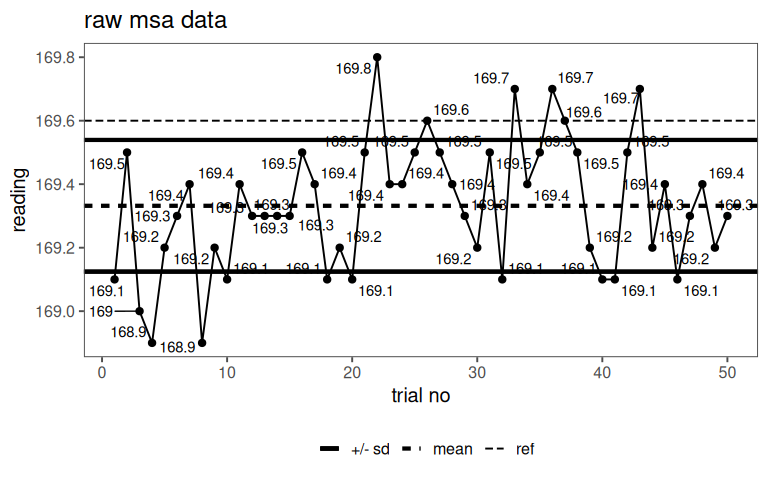
7.9.1.2 distribution
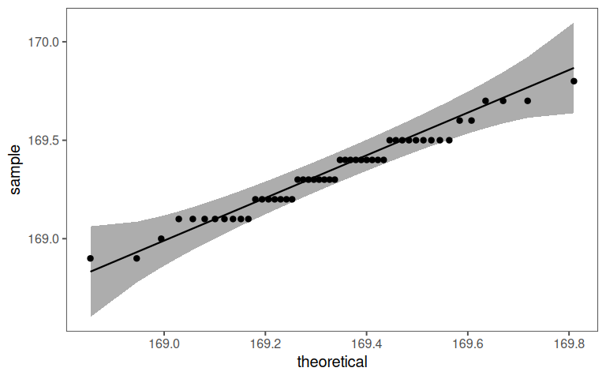
7.9.1.3 possible tolerance window
With a \(C_p = 2\) the tolerance window is \(\pm1.2cm\).
7.9.1.4 systematic error
| .y. | group1 | group2 | n | statistic | df | p |
|---|---|---|---|---|---|---|
| tape_reading_cm | 1 | null model | 50 | -9.134823 | 49 | 3.72e-12 |
With a p-value of 3.72^{-12} there is a significant systematic error.
\[\begin{align} \epsilon_{\text{systematic}} = \text{reference}-\bar{x}_{\text{tape reading}} \end{align}\]
The systematic error is \(0.3cm\).
7.9.1.5 check experiment vs. tolerance window
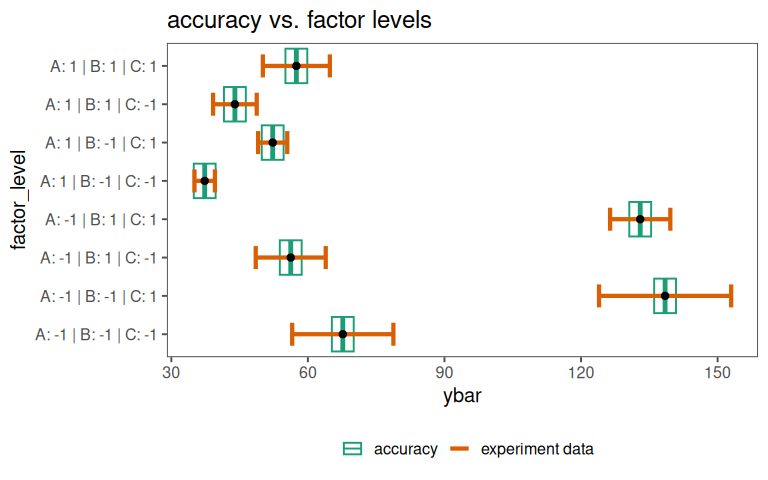
7.9.2 Modeling
7.9.2.1 full model
7.9.2.1.1 model quality
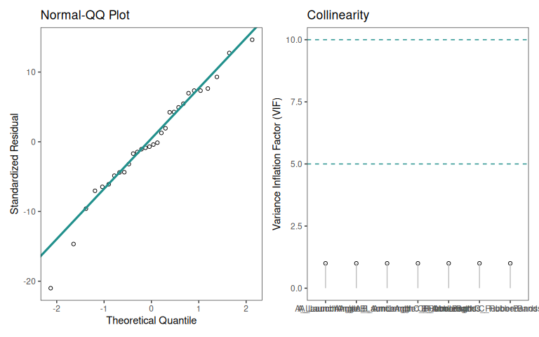
7.9.2.1.2 significance
| Characteristic | Beta | 95% CI | p-value | VIF |
|---|---|---|---|---|
| A_LaunchAngle | -26 | -29, -22 | <0.001 | 1.0 |
| B_ArmLength | -0.63 | -4.4, 3.1 | 0.7 | 1.0 |
| C_RubberBands | 22 | 18, 26 | <0.001 | 1.0 |
| A_LaunchAngle * B_ArmLength | 3.6 | -0.16, 7.3 | 0.060 | 1.0 |
| A_LaunchAngle * C_RubberBands | -15 | -19, -11 | <0.001 | 1.0 |
| B_ArmLength * C_RubberBands | 0.57 | -3.2, 4.3 | 0.8 | 1.0 |
| A_LaunchAngle * B_ArmLength * C_RubberBands | -0.93 | -4.7, 2.8 | 0.6 | 1.0 |
| R² | 0.950 | |||
| Adjusted R² | 0.934 | |||
| Abbreviations: CI = Confidence Interval, VIF = Variance Inflation Factor | ||||
7.9.3 DoE - main modeling
7.9.3.1 pareto plot
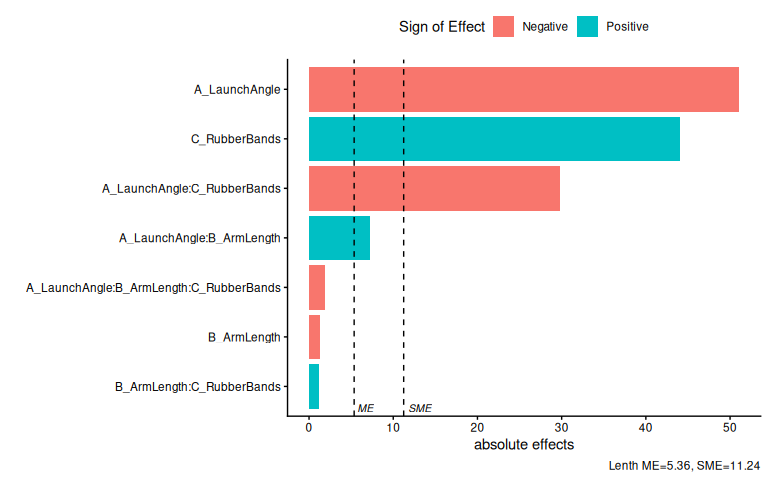
7.9.3.2 half normal plot
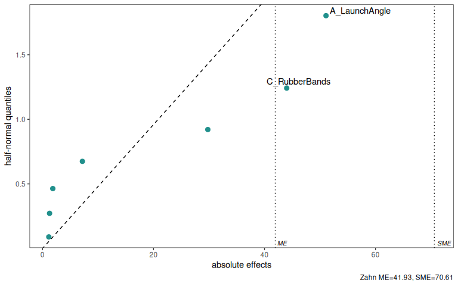
7.9.3.3 Main effect plot
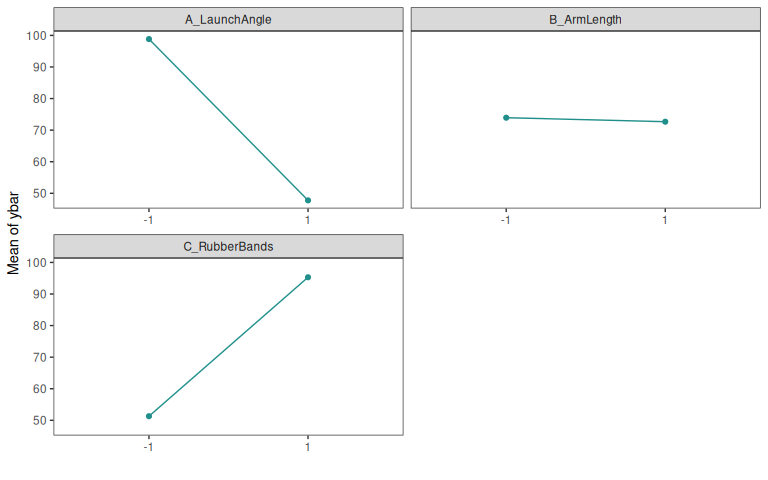
7.9.3.4 Interaction effect plot

7.9.4 DoE - robust design
7.9.4.1 Pareto plot
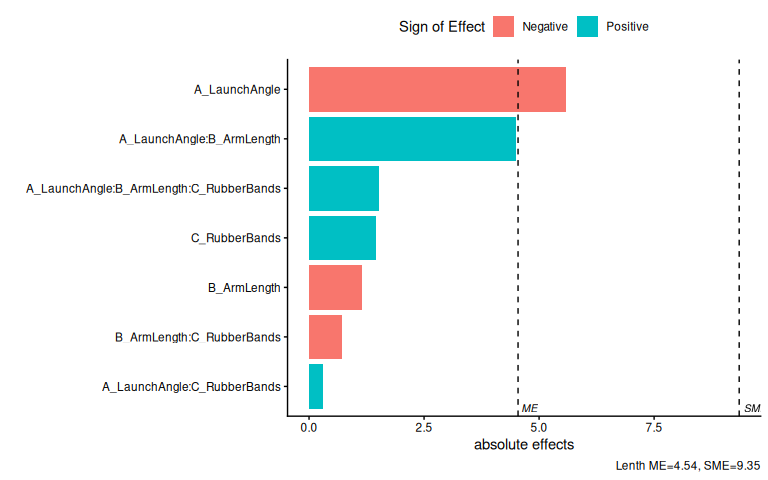
7.9.4.2 Half-normal plot
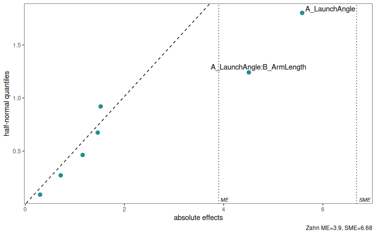
7.9.4.3 Main effect plot
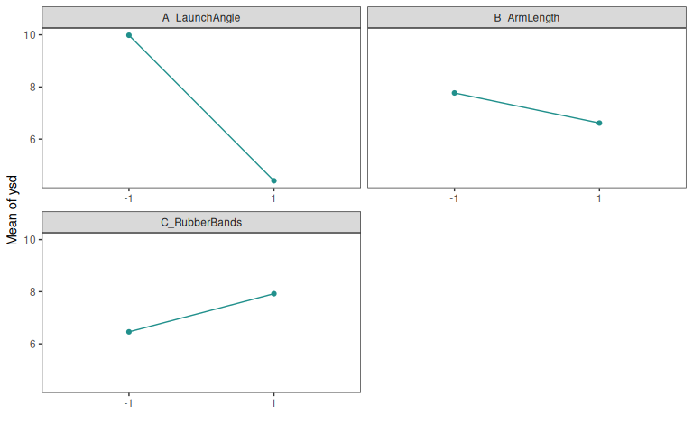
7.9.4.4 Interaction effect plot
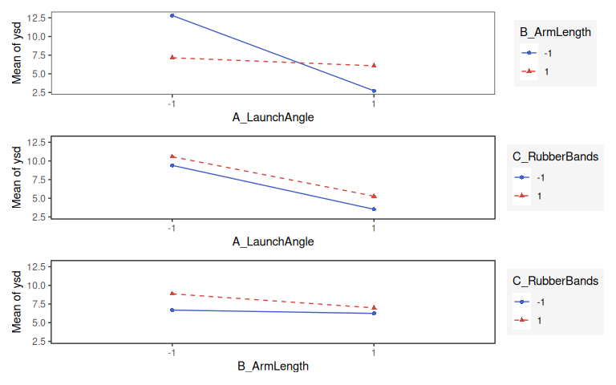
7.9.5 Check for linearity
7.9.5.1 Check center points
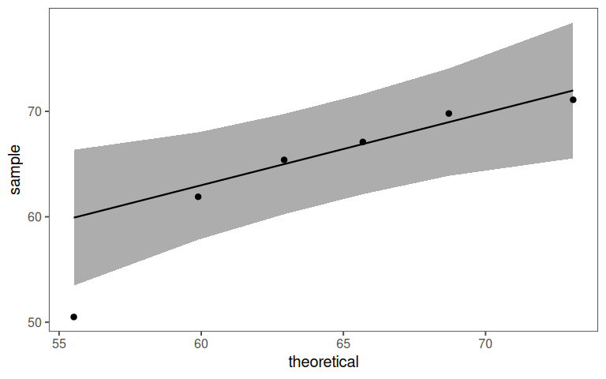
7.9.5.2 Test for linear model
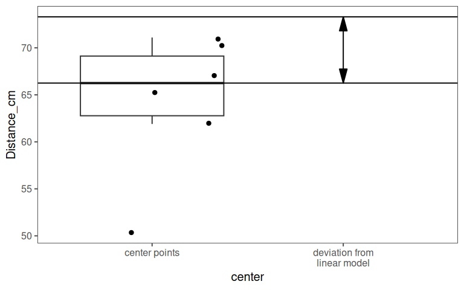
With a p value of \(0.032\) the center points deviate significantly from the linear model by about \(9cm\).
7.9.6 DoE - final model
7.9.6.1 Parameters - classic model
| Characteristic | Beta | 95% CI | p-value | VIF |
|---|---|---|---|---|
| A_LaunchAngle | -26 | -31, -20 | <0.001 | 1.0 |
| C_RubberBands | 22 | 17, 27 | <0.001 | 1.0 |
| A_LaunchAngle * C_RubberBands | -15 | -20, -9.6 | 0.001 | 1.0 |
| R² | 0.989 | |||
| Adjusted R² | 0.982 | |||
| Abbreviations: CI = Confidence Interval, VIF = Variance Inflation Factor | ||||
7.9.6.2 Parameters - robust design model
| Characteristic | Beta | 95% CI | p-value | VIF |
|---|---|---|---|---|
| A_LaunchAngle | -2.8 | -4.4, -1.2 | 0.008 | 1.0 |
| B_ArmLength | -0.58 | -2.1, 0.98 | 0.4 | 1.0 |
| A_LaunchAngle * B_ArmLength | 2.3 | 0.69, 3.8 | 0.016 | 1.0 |
| R² | 0.913 | |||
| Adjusted R² | 0.847 | |||
| Abbreviations: CI = Confidence Interval, VIF = Variance Inflation Factor | ||||
7.9.6.3 Final Catapult Model
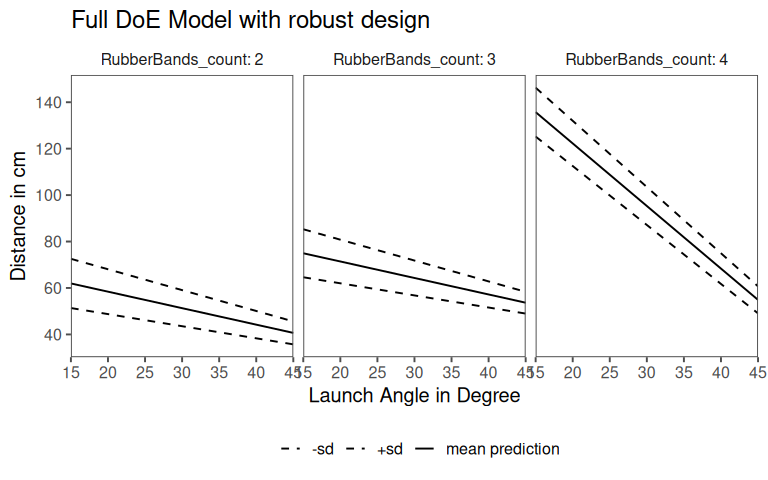
7.9.7 Fractional Factorial (Grömping 2014)
Goal: Identify main effects and key interaction with fewer experiments
7.9.7.1 Experimental plan
Original: \(2^3 \text{(factor levels)}* 3 \text{(repetitions)} + 6\text{(center points)} = 30 \text{ experiments}\)
Fractional (minimal): \(2^{3-1} \text{(factor levels)}* 1 \text{(no repetitions)} + 0\text{(center points)} = 4 \text{ experiments}\)
7.9.7.2 Aliasing
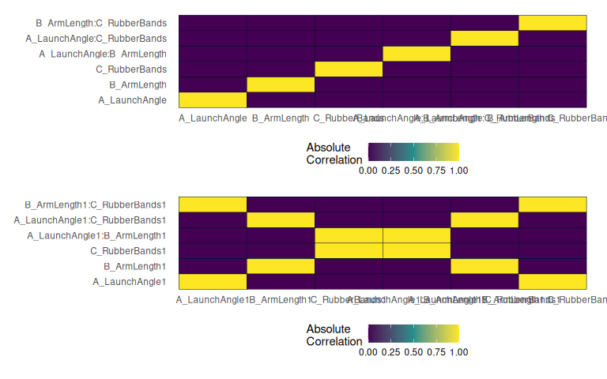
7.9.7.3 Confounding
| A: Launch Angle | B: Arm Length | C: Rubber Bands | A = B:C |
|---|---|---|---|
| -1 | -1 | 1 | -1 |
| 1 | -1 | -1 | 1 |
| -1 | 1 | -1 | -1 |
| 1 | 1 | 1 | 1 |
7.9.7.4 Resolution
- degree of confounding (or aliasing)
- provides a way to classify designs based on how severely factors and interactions are confounded
- Higher resolution means less confounding and more reliable estimation of effects
- III: Main effects are confounded with two-way interactions
- IV: Main effects are confounded with three-way (or higher) interactions, but two-way interactions are confounded with each other
- V: Main effects and two-way interactions are confounded only with three-way (or higher) interactions.
7.9.7.5 practical implications
- Lower resolution (e.g., R-III): Cheaper (fewer runs) but riskier because main effects may be confounded with two-way interactions.
If interactions exist, you might misinterpret the results.
- Higher resolution (e.g., R-V): More expensive (more runs) but provides clearer estimates of main effects and two-way interactions.
Preferred when interactions are suspected or critical.
7.9.7.6 available designs and resoultion